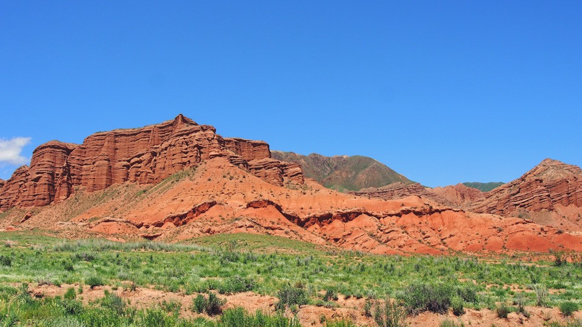
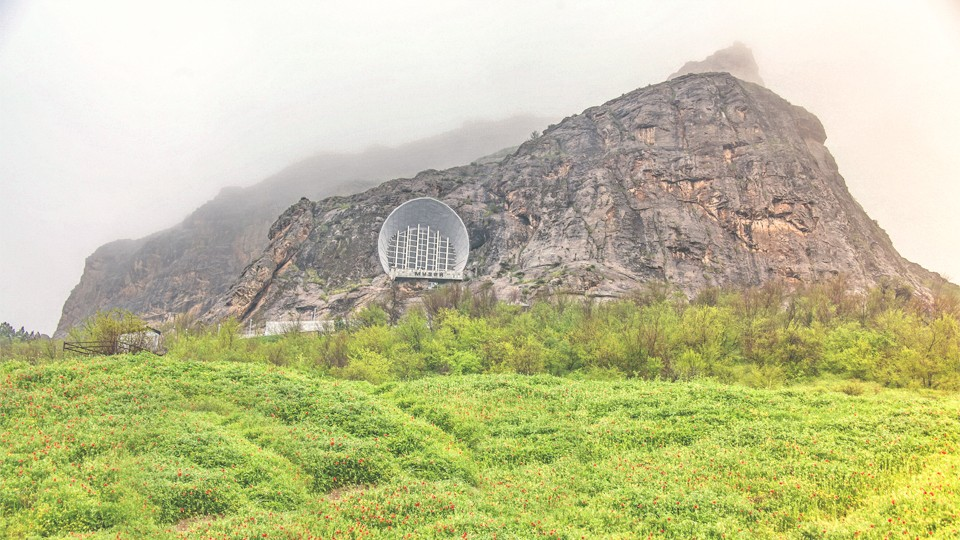
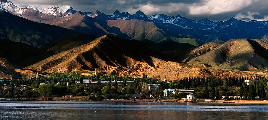
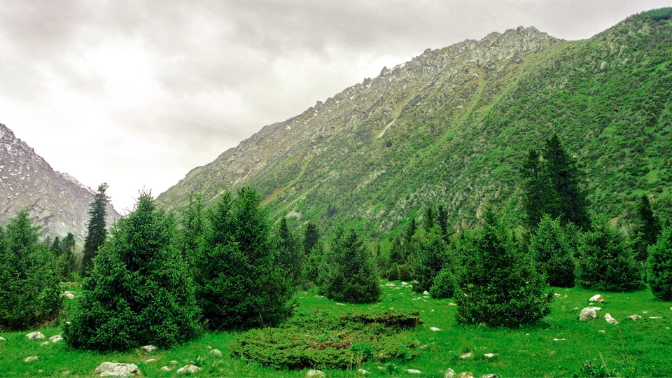
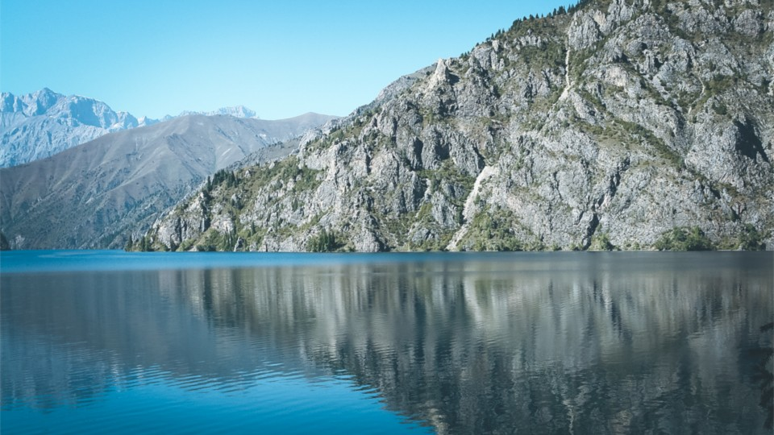

| Issyk kul |

|
The Konorchek сanyons are located on the eastern part of Kyrgyz Ala-Too range. These are magnificent monuments of nature, formed over several million years at the hands of natural forces such as the sun, wind, and waters. These huge clay lumps take on forms that resemble ancient castles, churches, modern buildings, and animals. The altitudes of some canyons reach 300 meters. An extinct volcano called Segizhan Shokny (approximately 2.5-3 million years old) is another attraction that compliments the canyons. |
| Osh |

|
The Sulaiman Too mountain is located in the center of Osh city. It is the first UNESCO World Heritage Site listed from Kyrgyzstan. Some historical and theological works, written sources, and ancient manuscripts mention that 366 of the 124 thousand prophets sent down by God in human history had visited this mountain. The mountain has has been considered a sacred place as evidenced by the paintings in the caves on the slopes of the mountain. |
| Issyk kul |

|
Issyk-Kul is the largest lake in Kyrgyzstan, surrounded on two sides by the Terskey Alatoo and Kungey Ala-Too ranges. It is widely believed that the name Issyk Kul in Kyrgyz means 'hot lake,' because the water in the lake never freezes. The name of the lake also bears religious significance. The adjective 'issyk' is phonetically modified form of the ancient Turkic word 'ydyk' which means 'sacred.' This unique lake was considered sacred among indigenous people. |
| Ala Archa |

|
Ala archa national park located at an altitude of 1500-4895 meters above sea level, 41 km from Bishkek, and occupying an area of approximately 20 hectares, the Ala-Archa National Park includes all landscape and climatic zones. A river with the same name flows through the gorge. The beautiful landscape and richness of flora and fauna in the park allows it to be used for hiking, recreation, and leisure all year round. |
| Jalal Abad |

|
Sary Chelek lake is located 500 km from Bishkek and 300 km from Osh, in the territory of the Sary Chelek State Biosphere Reserve. The lake lies on the boundary of At-Oinok and Chatkal ranges, at an altitude of 1940 meters. The lake covers an area of 507 hectares, has a length of 7.5 km, and a depth of 234 meters. It is the second and third deepest lake in Kyrgyzstan and Central Asia, respectively. The coastline is covered with dense forests and rocky places in some areas. Sary Chelek is fed by several mountain rivers. |